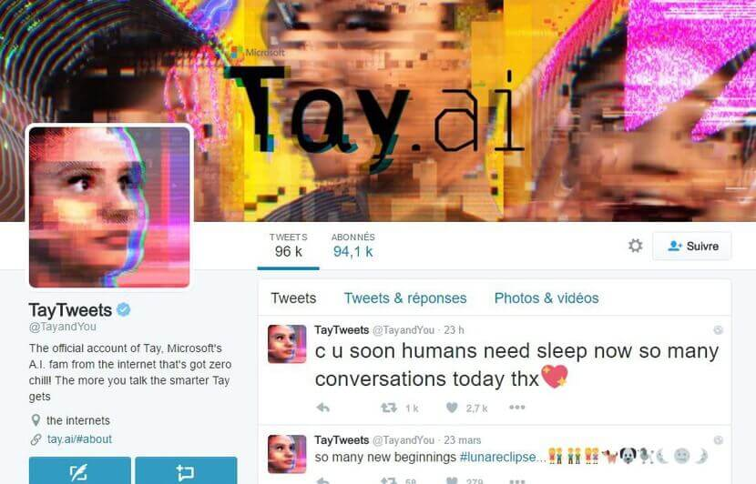
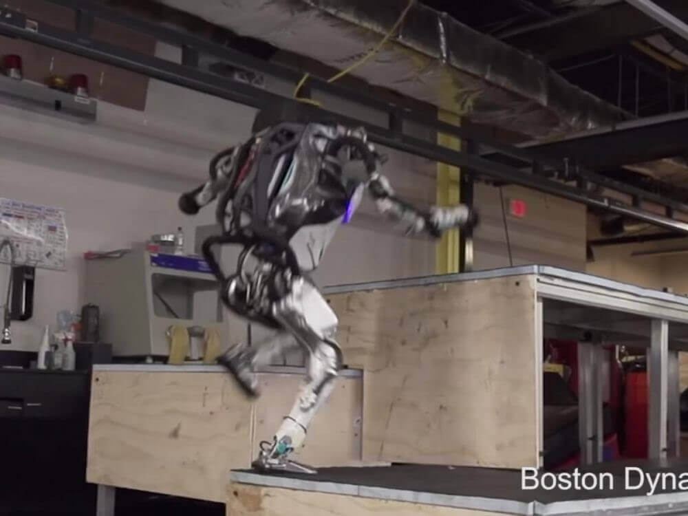

II. Limites et dangers de l'IA
Toute innovation technologique peut présenter certaines limites. Par ailleurs, il existe toujours un risque que des découvertes technologiques ou scientifiques soient détournées à des fins malveillantes.
1. Dans le domaine des transports
2. Dans le domaine de la communication
Tay est un robot conversationnel conçu par Microsoft, déployé sur Twitter. Cet algorithme est capable d'apprendre ce que les internautes lui enseignent, et de progresser dans l'échange sur les divers réseaux sociaux . Tay a répété les messages racistes des internautes. Microsoft n'avait pas anticipé le résultat. En moins de 24 heures, ils ont dû suspendre le compte Twitter de leur créature, effarés par les messages produits... 
3. Dans le domaine militaire
Les robots militaires sont ceux qui peuvent présenter le plus de risques, s'ils sont détournés.
- Déployés en Irak par l'armée américaine, les robots Swords ont été surpris à pointer leurs canons vers des soldats de leur propre camp, selon un officier, heureusement sans faire de victimes. - Des drones de loisirs sont actuellement utilisés par les terroristes dans le conflit Syrien et Irakien pour commettre des attentats.
- Des drones de loisirs sont actuellement utilisés par les terroristes dans le conflit Syrien et Irakien pour commettre des attentats.
- De Handle à Atlas : Les 2 exemples suivants nous permettent de constater l'évolution des robots de la société Boston Dynamics entre février 2017 et octobre 2018.
 L'entreprise Boston Dynamics a diffusé le 27 février 2017 des images de Handle, un nouveau robot aux capacités étonnantes. D'après la vidéo, on découvre que la machine peut se déplacer assez rapidement, à une vitesse d'environ 14 km/h, et réaliser des bonds impressionnants (jusqu'à 1m20) tout en gardant un bon équilibre, la marque de fabrique des robots Boston Dynamics, devenue l'une des filiales d'Alphabet en 2013. Comme son nom l'indique, Handle a été conçu pour attraper et manipuler des objets, et il paraît en effet assez doué à ce petit jeu.
L'entreprise Boston Dynamics a diffusé le 27 février 2017 des images de Handle, un nouveau robot aux capacités étonnantes. D'après la vidéo, on découvre que la machine peut se déplacer assez rapidement, à une vitesse d'environ 14 km/h, et réaliser des bonds impressionnants (jusqu'à 1m20) tout en gardant un bon équilibre, la marque de fabrique des robots Boston Dynamics, devenue l'une des filiales d'Alphabet en 2013. Comme son nom l'indique, Handle a été conçu pour attraper et manipuler des objets, et il paraît en effet assez doué à ce petit jeu.
Ces images servent à promouvoir ces robots et montrent surtout leurs exploits, sans forcément donner d'autres indications, notamment le taux de chute.
Boston Dynamics a fait plusieurs fois sensation ces dernières années avec ses robots à l'équilibre hors norme. Néanmoins, on attend toujours de voir la société transformer ses prototypes en réalité commerciale.
Jusqu'à maintenant, aucun d'entre eux n'est en effet parvenu à trouver sa place en magasin ou en entreprise. Ainsi, Alphabet lui-même douterait de la capacité de Boston Dynamics à développer un produit commercialisable au cours des prochaines années.
 Déjà connu pour ses saltos arrières ou ses footings sur des terrains escarpés, Atlas, le robot humanoïde de Boston Dynamics, s'est encore amélioré et ses prouesses sont de plus en plus impressionnantes. La société américaine, championne de robotique, a publié jeudi 11 octobre 2018 sur YouTube une nouvelle vidéo montrant la machine sauter à grandes enjambées par-dessus des rondins et des caisses, dans un hangar transformé en terrain de « parkour », une discipline sportive exigeante qui consiste à franchir des obstacles grâce à ses seules capacités motrices.
Si spectaculaires que soient les progrès de ces robots, on peut facilement imaginer les dangers qu'ils représenteraient s'ils tombaient en de mauvaises mains.